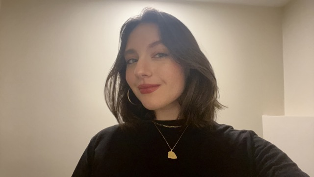

About Me
Background
Hi! I'm Keilan Romito, an artist and designer based out of Cambridge, Massachusetts. I'm currently a student at Lesley University, and majoring in graphic design. This is my second semester at Lesley after a couple years at North Carolina State University in Raleigh. I'm excited to be back in New England to continue my education in an area I love.
I have a variety of interests I try to incorporate into my work that influences who I am as an artist and designer. Some of these include:
- Nature/florals
- Crochet (as well as other textiles)
- Sports/fitness
Check out my Instagram @kromitoart for more.
Work Experience
I'm always looking for a challenge and continue to push myself to work in different mediums. I'm well versed in digital and physical media such as:
- Digital - Adobe Suite and Procreate
- Drawing - Graphite, Charcoal, Conte and Color Pencil
- Painting - Acrylic
- Printmaking - Etching and Linoleum
- Mixed Media